2026-10-29 · 第三部分：FPGA前期采集、DDR存储与PC FFT验证
留空待补。
留空待补。
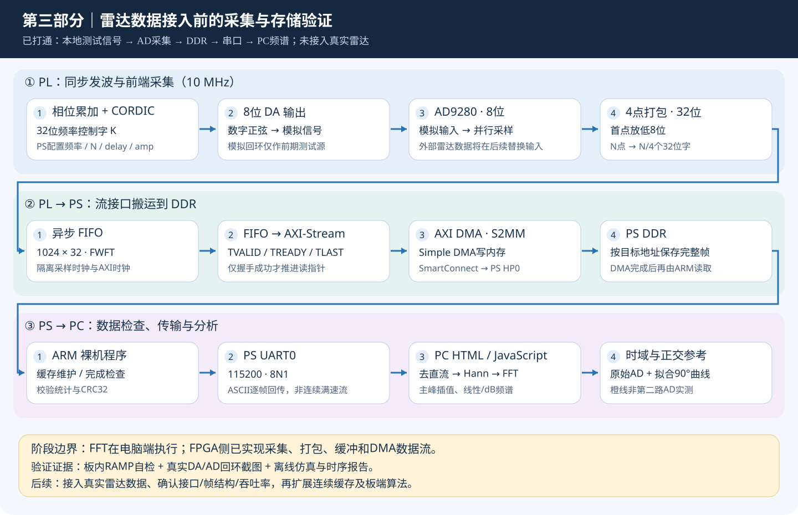
| 本部分职责 | 本周阶段目标 | 达到情况 |
|---|---|---|
| 为相控阵雷达准备 FPGA 数据处理与存储链路 | 在真实雷达数据尚未提供时，用已知测试信号验证读数据→DDR→FFT可视化 | 阶段性链路已跑通；不是完整雷达系统验收 |
| PL可编程逻辑 | 产生测试正弦、读取8位AD、打包、FIFO和AXIS传输 | CORDIC发波及采集模块已实现 |
| PS ARM与DDR | 配置采集、启动DMA、检查结果、串口输出 | Simple S2MM写入PS DDR并回传 |
| PC端网页 | 数据校验、FFT、波形和频谱展示 | 单帧与逐帧连续刷新均已有实测截图 |
完成范围：已实现前期数据链路学习与测试。尚未接入雷达多通道数据；未实现雷达波束形成、测角测距、目标分离，也未把FFT部署到PL。
| 项目 | 实际配置 |
|---|---|
| 开发板与器件 | 正点原子 Z100，XC7Z035FFG900-2 |
| 开发软件 | Vivado 2018.3、Xilinx SDK 2018.3；RTL为Verilog，PS为C，网页为HTML/CSS/JavaScript |
| 配套采集/发波模块 | J37配套AD/DA模块；AD9280输出8位，配套8位DA按厂商示例接口使用 |
| 时钟与数据宽度 | 帧内采样/DA更新10 MHz；AXI侧100 MHz；4×8位→32位；FIFO读写均32位 |
| FIFO与帧长 | 异步FWFT FIFO深度1024字；N=256/512/1024/2048/4096点，N点为N字节 |
| 本次截图参数 | N=4096，delay=3，amp=8；频率分别10 kHz、100 kHz、1 MHz；串口115200、8N1 |
| 连接关系 | DA模拟输出→AD模拟输入；JTAG用于Debug下载；PS USB串口用于电脑接收数据 |
实验照片由组员于2026-10-29提供，可见Z100及配套模块、USB连接和调试线。照片用于记录真实平台；部分接口及模拟线端点不完整可见，具体引脚与接线关系仍以工程约束和配套示例为准。上电前检查模块方向、IO供电及模拟输入允许范围。
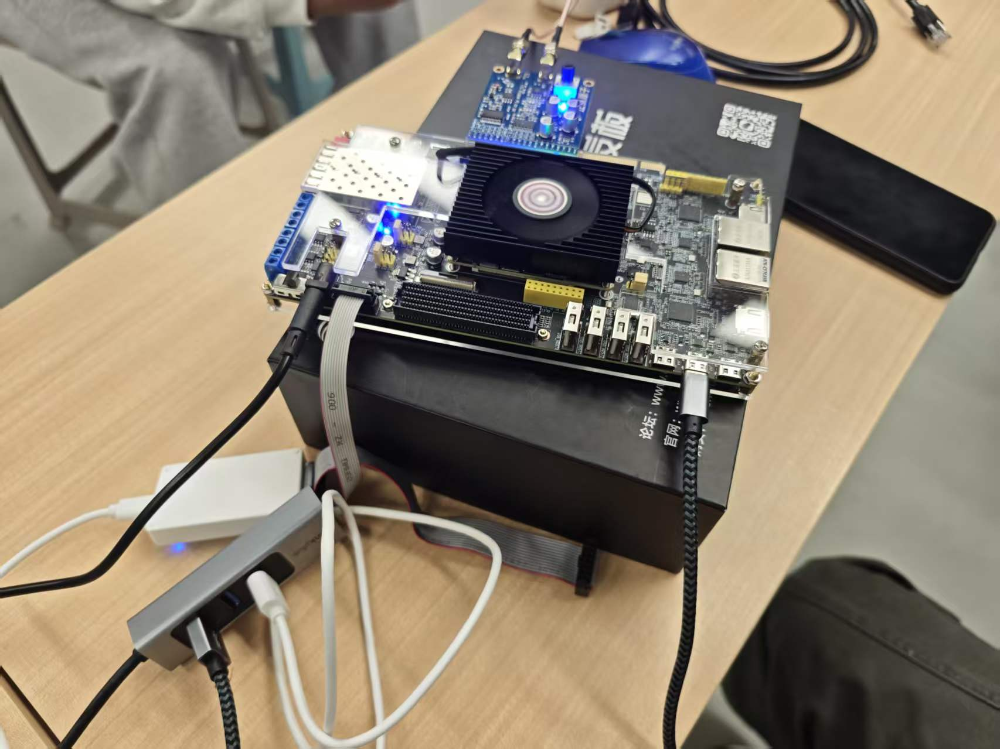
| 阶段 | 具体工作 | 形成的结果 |
|---|---|---|
| 理解原工程 | 学习Vivado工程、BD、IP、约束、综合/实现和时序报告；处理IP升级与依赖 | 能够打开工程、生成硬件产物并识别版本与约束问题 |
| 模块级学习 | 从8位ADC采样开始，编写采集状态机、四点打包、FIFO到AXIS接口 | 明确字节顺序、满/空处理、握手与TLAST |
| 搭建存储链路 | 组合BD内PS、DMA、SmartConnect、GPIO与复位；连接GP0控制和HP0数据通路 | 形成采集→FIFO→DMA→DDR的硬件路径 |
| 仿真与离线检查 | 逐点比较CORDIC及采样数据，加入背压、满异常、复位恢复与DDR保护区检查 | 形成核心及完整BD仿真日志与时序报告 |
| 准备已知输入 | 用CORDIC产生正弦并驱动DA，采用真实AD/DA模拟回环代替尚未取得的雷达数据 | 可通过PS命令改变频率、帧长、延迟与幅度 |
| 上板Debug验证 | JTAG下载bit；SDK下载ELF并Resume；PS UART0连接网页；先RAMP后REAL | 组员取得自检通过与三个频率的真实采集截图 |
| 可视化与交付 | 实现FFT、CRC、逐帧刷新、线性/dB、+90°参考与数据导出；整理注释和README | 工程、运行产物、截图和汇报统一版本发布 |
| 模块 | 用途与关键逻辑 |
|---|---|
| measurement_core | 解析PS参数和命令；控制CORDIC、DA、采样延迟与采样计数；四点打包；输出状态 |
| FIFO Generator | 在采样时钟域与AXI时钟域间缓存32位字；FWFT模式保证非空时dout即队首 |
| fifo_to_axis | 将FIFO队首映射TDATA；TVALID与TREADY握手成功时读出；按N/4生成TLAST |
| AXI DMA S2MM | 把无地址的AXI-Stream样本转换为有地址的DDR写事务；当前未用MM2S与SG |
| AXI SmartConnect / Interconnect | SmartConnect连接DMA数据主口与PS HP0；Interconnect把PS GP0连接DMA/GPIO控制寄存器 |
| ZYNQ7 PS | ARM执行C控制程序；DDR控制器管理PS DDR；UART0把结果回传PC |
| Processor System Reset | 按AXI时钟同步释放相关复位；ADC域另有同步处理，不能把不同极性的复位直接混用 |
样本格式：每个AD采样为一个8位无符号码；按时间顺序s0、s1、s2、s3打包成{ s3,s2,s1,s0 }。例如00、01、02、03组成0x03020100，PS按字节读取仍恢复00、01、02、03。4096点对应1024个32位字、4096字节DDR有效数据。
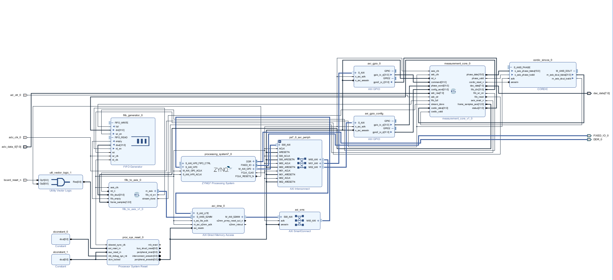
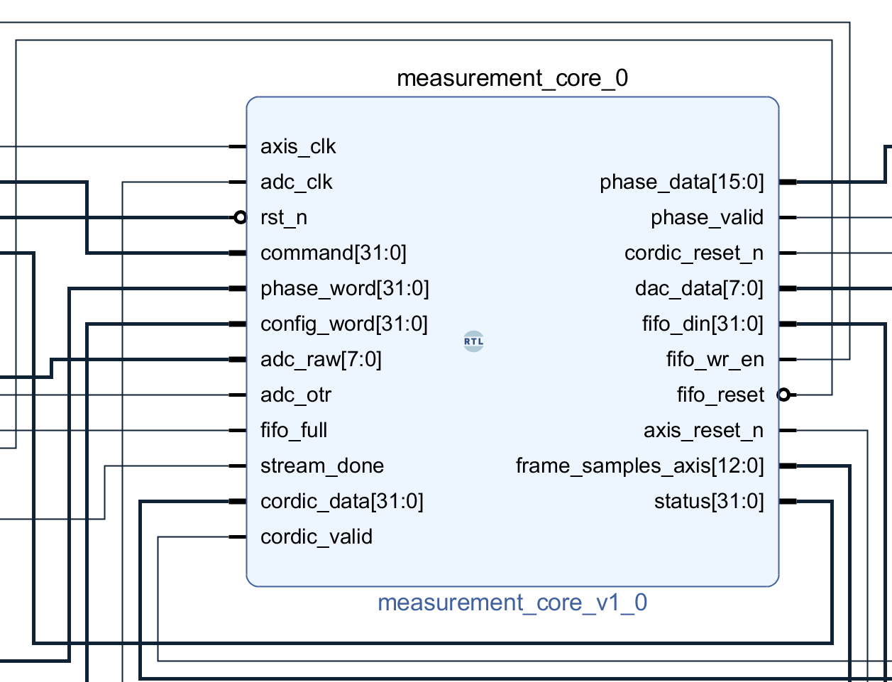
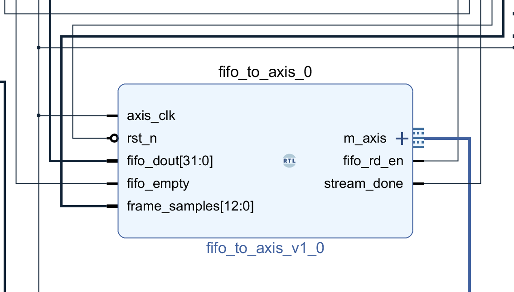
首个采样放最低字节，第四个点参与组合拼接；仅第四点且 FIFO 未满时写入。N=4096 对应 1024 个 32 位字。
源码定位：rtl/measurement_core.v，第68～73行；以下代码及截图均来自当前工程。
// 本拍是第 4 点时，{当前点, 前三点} 同时被 FIFO 在时钟沿接收。
// 首点占最低字节，四点组成一个 32 位字：{s3,s2,s1,s0}。
// 写使能是组合条件；时序块中清 pack 不影响本沿已被 FIFO 接收的数据。
assign fifo_din = {sample, pack};
assign fifo_wr_en =
adc_reset_n && state == CAPTURE && count < length && !fifo_full && count[1 : 0] == 3;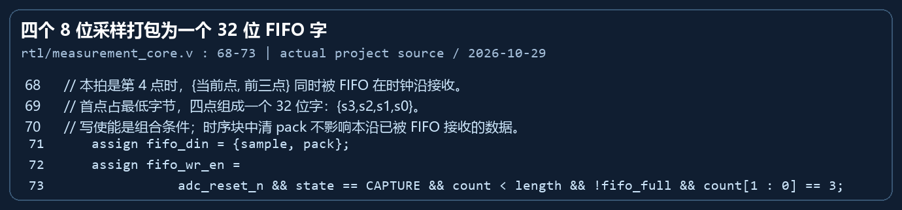
只有 TVALID 与 TREADY 同时为 1 时消费 FIFO 并推进字计数；TLAST 为第 N/4 个字。stream_done 只表示 AXIS 末字被接收，不代表 DDR 写入完成。
源码定位：rtl/fifo_to_axis.v，第17～38行；以下代码及截图均来自当前工程。
// ===== 2. 当前字序号与握手 =====
// 4096 个字节最多 1024 个 32 位字，10 位计数器计 0..1023。
// word_count 只在 TVALID && TREADY 时前进，停顿不消耗 FIFO 数据。
reg [9 : 0] word_count;
assign m_axis_tdata = fifo_dout;
assign m_axis_tkeep = 4'hf;
assign m_axis_tvalid = rst_n && !fifo_empty;
assign fifo_rd_en = m_axis_tvalid && m_axis_tready;
// ===== 3. 包尾与完成 =====
// N/4 - 1 是最后一个字序号；等待 TREADY 时，TLAST 与 TDATA 一起保持。
// stream_done 仅表示 AXIS 包尾已被下游接收，不能代替 DMA DDR 完成标志。
assign m_axis_tlast = m_axis_tvalid && ({1'b0, word_count} == ((frame_samples >> 2) - 1'b1));
assign stream_done = fifo_rd_en && m_axis_tlast;
// ===== 4. 时序计数：仅按实际成功传输的字数计数 =====
always @(posedge axis_clk or negedge rst_n)
if (!rst_n)
word_count <= 0;
else if (fifo_rd_en) begin
if (m_axis_tlast)
word_count <= 0;
else
word_count <= word_count + 1'b1;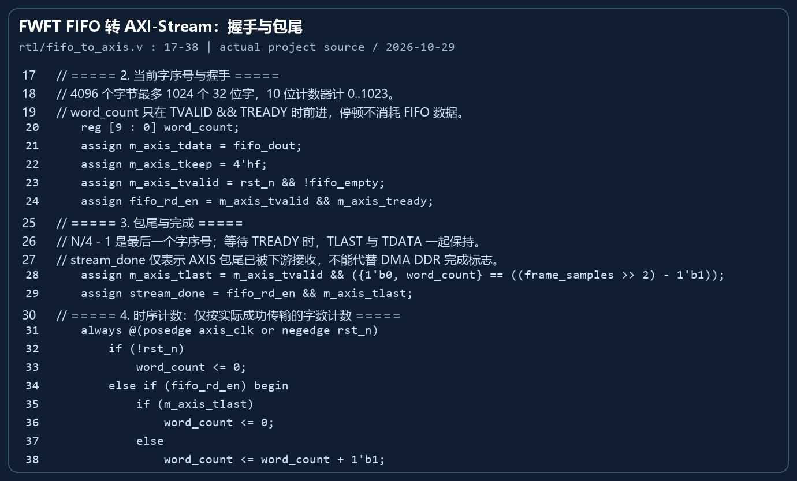
PS 参数稳定后先 flush CPU cache、提交 S2MM N 字节目标缓冲，再翻转 START。完成条件额外核验 IOC、不忙、采样数和 stream_done；随后 invalidate cache 才读取。
源码定位：software/main.c，第111～127行；以下代码及截图均来自当前工程。
k = (u32)((((u64)freq << 32) + FS / 2) / FS);
params = n | (delay << 13) | (amp << 21);
XGpio_DiscreteWrite(&config, 1, k);
XGpio_DiscreteWrite(&config, 2, params);
usleep(1000); /* bundled parameters settle before request-toggle crossing */
/* 5.3 填保护字节，并把CPU Cache中的缓存内容写回DDR。
* DMA访问物理DDR，不能只依靠CPU Cache中的新值。
*/
memset(buffer, 0xa5, sizeof(buffer));
Xil_DCacheFlushRange((UINTPTR)buffer, sizeof(buffer));
XAxiDma_IntrAckIrq(&dma, XAXIDMA_IRQ_ALL_MASK, XAXIDMA_DEVICE_TO_DMA);
if (XAxiDma_SimpleTransfer(&dma, (UINTPTR)buffer, n, XAXIDMA_DEVICE_TO_DMA) != XST_SUCCESS)
goto fail;
/* 5.4 DMA提交成功后才START：17保留bit0/bit4，8设置dma_armed，异或1翻转START。 */
cmd = (cmd & 17U) | (ramp ? 2U : 0U) | 8U;
cmd ^= 1;
XGpio_DiscreteWrite(&control, 1, cmd);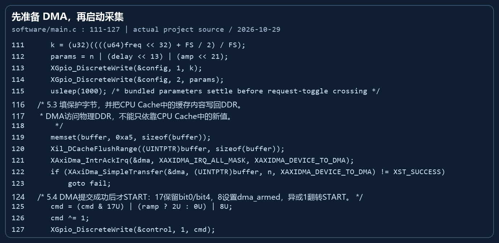
FFT 在电脑网页 JavaScript 运行；Hann 窗和去直流减少泄漏与 DC 干扰，按窗系数和归一化，单边谱非 DC/Nyquist 乘 2。后续对数抛物线峰值插值不改变 fs/N 分辨网格。
源码定位：web/signal.js，第154～172行；以下代码及截图均来自当前工程。
const min = Math.min(...samples),
max = Math.max(...samples),
mean = samples.reduce((a, b) => a + b, 0) / n;
if (max - min < 2) throw Error('交流变化不足，不能可靠测频；检查回环接线和幅度');
const re = new Float64Array(n),
im = new Float64Array(n);
let sum = 0;
for (let i = 0; i < n; i++) {
const w = 0.5 * (1 - Math.cos((2 * Math.PI * i) / (n - 1)));
sum += w;
re[i] = (samples[i] - mean) * w;
}
// Hann窗的幅度衰减用窗系数总和补偿；单边谱除DC/Nyquist外乘2。
fft(re, im);
const magnitude = new Float64Array(n / 2 + 1);
let peak = 1;
for (let i = 0; i <= n / 2; i++) {
magnitude[i] = (Math.hypot(re[i], im[i]) / sum) * (i > 0 && i < n / 2 ? 2 : 1);
if (i > 0 && i < n / 2 && magnitude[i] > magnitude[peak]) peak = i;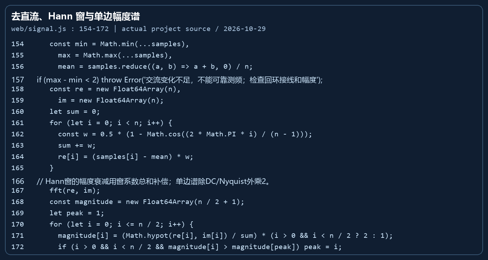
| 环节 | 计算/逻辑 | 工程意义 |
|---|---|---|
| DDS与CORDIC | K=round(fout×2^32/fs)，phase[n+1]=phase[n]+K；相位高位转换为IP所需格式；CORDIC计算sin/cos | CORDIC在PL中产生已知正弦，便于检查回环；它不是测频FFT |
| 采集时序 | 复位准备→等待首个有效零相位→延迟→采N点→等待DMA完成ACK→空闲 | 发波与采样由PL确定性时序控制；delay=3仅是初始设置，真实延迟未标定 |
| AXIS握手 | transfer=TVALID AND TREADY；只有transfer才推进读FIFO和字计数 | 下游背压时不丢字、不提前前进包尾 |
| 去直流与Hann窗 | y[n]=(x[n]-mean)×0.5×(1-cos(2πn/(N-1))) | 减少直流和非整周期截断泄漏；不能消除真实噪声或谐波 |
| FFT与幅度 | PC执行radix-2 FFT；幅度按Hann窗系数总和归一化，非DC/Nyquist单边谱乘2 | 4096点/10MHz，观测409.6μs，格点2441.40625Hz；幅度单位code，未标定伏特 |
| 主频插值 | 选主峰后用相邻三个FFT点的对数幅度作抛物线插值 | 给出比整数格点细的估计值，但不等同于相同大小的分辨率或绝对精度 |
| +90°参考 | 最小二乘拟合x[n]=A sin(ωn)+B cos(ωn)+DC，再将拟合基波相位加π/2 | 橙线是计算参考，不是第二路AD实测、Hilbert全带宽重建或硬件I/Q完成 |
| 连续刷新 | 完整帧校验及成功标志收到后，等待150ms再发下一条m命令；任一时刻一帧在途 | 逐帧采集并刷新，115200 ASCII回传有间隙，不是持续无缝10MSPS串流 |
完成标志不可混用：采样frame_done表示N点已采集；stream_done表示AXIS末字被DMA接收；DMA IOC及不忙才用于确认DDR事务完成。随后invalidate CPU Cache并校验数据，再允许下一帧。
f_bin = fs / N = 10,000,000 / 4096 = 2441.40625 Hz
T_frame = N / fs = 409.6 us
100 kHz: T = 10 us; 10 kHz: T = 100 us; 1 MHz: T = 1 us| 检查层次 | 输入与判据 | 证据 |
|---|---|---|
| 板内确定性自检 | 4096字节为00～FF循环16次；顺序错误数为0；sum/min/max/CRC一致 | 用户截图SELFTEST PASS；本次独立重算期望sum和CRC一致 |
| 真实模拟回环 | 已知DA频率→真实AD→DDR→UART；网页验证点数/CRC/统计及成功标志 | 10k、100k、1MHz三张REAL实测截图 |
| 离线历史仿真 | 实际Xilinx模型逐点检查、背压、满异常恢复、完整BD DDR与保护区 | 2026-10-28日志：核心39707检查；BD两帧512字节、保护区256字节检查通过 |
| 本次回归 | 网页算法、帧协议、连续请求/停止/迟到帧、编码无损转换 | 2026-10-29离线命令重新执行通过；未由脚本操作开发板 |
| RAMP项目 | 截图值 | 独立核对 |
|---|---|---|
| 样本模式 | 00～FF递增循环 | 4096=256×16 |
| sum | 522240 | 16×(0+…+255)=522240 |
| min / max | 0 / 255 | 符合8位全范围递增码 |
| errors | 0 | 截图显示无顺序错误 |
| CRC32 | A2912082 | 本次Python zlib对预期4096字节计算一致 |
| 成功标志 | SELFTEST PASS | 验证数字链路，不代表模拟精度验收 |
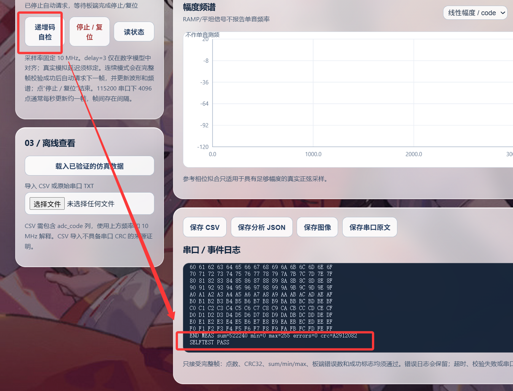
| 设置频率 | 截图主频 | 显示偏差 | ADC范围 / 均值 | CRC32 |
|---|---|---|---|---|
| 10 kHz | 10.019 kHz | +19.48 Hz | 118～131 / 124.525 | 4DB10ADD |
| 100 kHz | 99.991 kHz | −8.97 Hz | 118～131 / 124.504 | 7B4FC76F |
| 1 MHz | 999.970 kHz | −29.95 Hz | 118～130 / 124.603 | FB5456F7 |
共同参数为fs=10MHz、N=4096、delay=3、amp=8，三张截图均显示“串口实测·REAL”和“校验通过”。主频kHz显示经过舍入，偏差Hz字段保留更多位数，二者不能直接按显示位数相减核对。以上只记录代表帧，不是多次重复实验统计。
阶段结论：在已知输入信号下，真实回环的采集、DDR写入、串口回传和PC端FFT已取得一致的基本结果，达到本部分前期链路学习与验证目标。CRC通过证明本帧传输完整；不单独证明模拟幅度、时钟绝对精度或雷达算法性能。
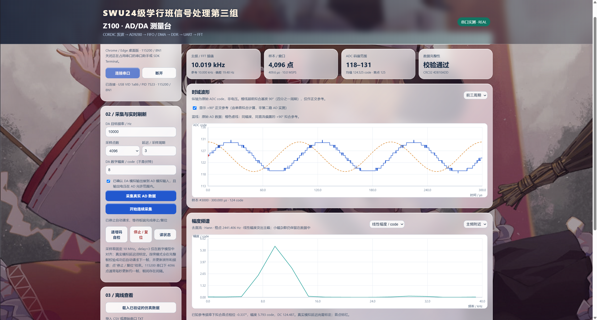
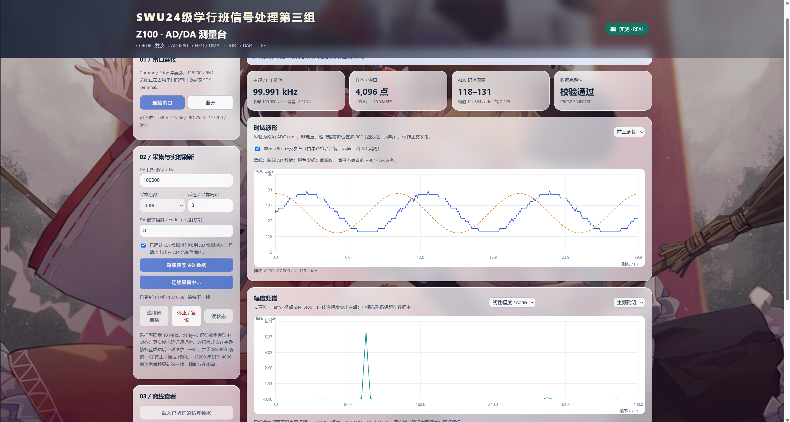
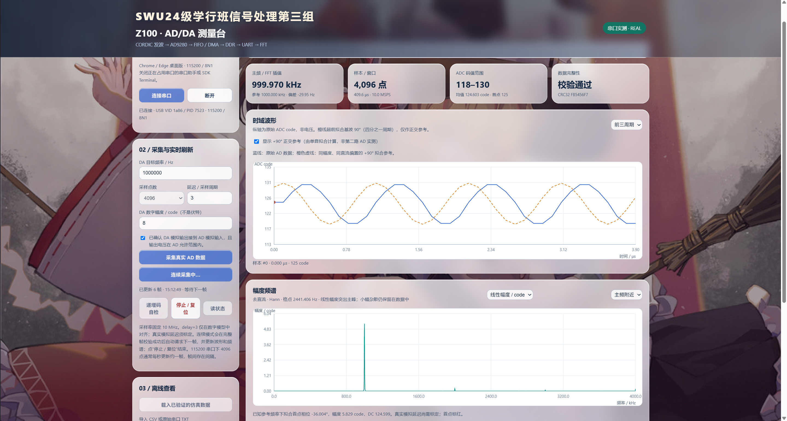
| 现象 | 解释与后续验证 |
|---|---|
| 时域有台阶 | 8位ADC，当前信号峰峰值仅12～13code；量化明显。不能仅为平滑而篡改原始数据。 |
| 均值约124.5而非128 | 提示链路直流偏置；尚无电压标定，不能把code直接当伏特。 |
| 线性谱呈尖峰，dB谱底部更丰富 | 线性突出主峰，dB放大弱分量的可见性；显示差异不等于噪声被消除。 |
| 低频谱主瓣看起来宽 | Hann窗主瓣与有限409.6μs观察窗共同影响；10kHz仅约4个周期，不能与100kHz显示宽度直接当性能优劣。 |
| 1MHz波形更像折线 | 10MSPS下每周期约10点；页面最少显示40点，因此该频率“前三周期”视图实际覆盖约3.9周期。 |
| 橙色曲线更平滑且相差90° | 它是理想单音拟合参考，不包含原始ADC量化和全部噪声；不能当成第二路采集证据。 |
| 几Hz到几十Hz估计偏差 | 尚无校准频率计或独立时基对照，也无重复统计，不宣称该数值为绝对测频精度。 |
| 已更新14帧 / 6帧 | 仅证明截图时自动刷新已运行，不据此宣称小时级稳定或持续无丢样。 |
| 原始数据留存不足 | 本次取得截图与照片，未收到相应REAL CSV/JSON/UART原文；因此不计算SNR、THD、误码率或重复性标准差。 |
| 问题 | 原因或判断依据 | 采用的方案 / 当前状态 |
|---|---|---|
| 原工程IP锁定、升级后仿真依赖不一致 | 旧版本子IP与当前Vivado环境不匹配 | 检查Report IP Status，升级/重新生成依赖及输出产品；通过综合和模型仿真；不把所有警告简单忽略 |
| 启动时首个CORDIC相位可能错位 | 复位释放与valid同拍的接收时机 | 增加cordic_warm预热、保持零相位并等待有效输出；核心仿真逐点检查 |
| FIFO读出与AXIS接收不同步 | Standard读延迟不能直接套用队首有效逻辑；下游可能背压 | 使用FWFT；只在TVALID&TREADY时rd_en和计数；保持TDATA/TLAST |
| 采完后读DDR可能过早 | 采样结束、流末字和DDR完成是不同事件 | 先提交DMA再START；等待IOC及不忙、计数/状态检查，再ACK |
| DDR读到CPU旧缓存 | DMA直接写DDR，与CPU Cache非自动一致 | 提交前flush，完成后invalidate；尾部0xA5保护区检查 |
| 只下载bit，网页没有串口响应 | ARM ELF未启动或停在main，或串口被别的软件占用 | Program FPGA后启动adc_uart Debug并Resume；PS USB串口115200，关闭SDK Terminal |
| Launch SDK提示找不到导出系统 | 导出文件命名与当前顶层启动查找不匹配 | 独立启动SDK并选择已有sdk_workspace；使用现成z100_hw和adc_uart |
| 中文注释乱码 | UTF-8被旧Windows IDE按GBK解释 | 本地IDE源码GBK、GitHub规范源码UTF-8；无损转换脚本与往返测试 |
| 页面只能看单帧 | 原协议是命令→一帧→回传 | 网页收到完整成功帧后再请求下一帧；停止/断线/超时/校验失败终止循环 |
| 频谱不如演示尖锐 | 对数与线性坐标、幅度、窗口和频率范围不同 | 增加线性/dB切换，保留原始FFT数据；不以隐藏噪声代替性能改进 |
仓库：https://github.com/WuWingKit/z100-ad9280-capture
本次发布：v0.3.0-20261029｜完整工程与测试证据下载
| 入口 | 用途 |
|---|---|
| main分支 | 当前源码、BD、文档、网页、截图和测试脚本；GitHub源码使用UTF-8 |
| Release完整工程ZIP | 包含可直接打开的Vivado工程、SDK工作空间、bit/HDF/ELF及证据，排除可重建运行缓存 |
| Release网页ZIP | 独立本地调试网页，包含背景资源、FFT与连续采集功能 |
| SHA256SUMS.txt | 核对下载包及硬件/软件产物；避免混用不同版本bit与ELF |
| docs/weekly_20261029 | 汇报XML、代码截图、7张用户截图、真实照片、观测表与检查记录 |
工程：E:\FPGAWork\z100_cordic_loop_20261028\bd_start.xpr
bit：hardware/z100_cordic.bit
SDK工作空间：sdk_workspace
ELF：hardware/adc_uart.elf
网页：web/start_dashboard.cmd → http://127.0.0.1:8765/| 事项 | 目标 | 建议保留的验收证据 |
|---|---|---|
| 重复性和原始数据留存 | 每个频率至少保存10帧，记录时钟与连接条件 | 匹配的CSV/JSON/UART、设置表、均值与标准差；无数据不补编 |
| 模拟链路标定 | 确认增益、偏置、允许电压、延迟与时钟准确度 | 示波器/频率计对照，ADC码到电压标定，OTR和幅度余量 |
| 接口对接真实雷达 | 明确通道数、位宽、时钟、帧格式、触发与同步 | 接口协议、时序图、跨域设计与真实回波样本 |
| 持续存储能力 | 按实际数据率评估DDR带宽和缓存容量 | 吞吐测量、乒乓缓存/队列方案、溢出统计与恢复测试 |
| FFT部署决策 | 按实时性要求选择继续PC分析或迁移PL FFT IP | 定点位宽、缩放、AXIS配置、资源与时序评估 |
| 多成员协作 | 以main和版本化Release作为共同基线 | README、问题记录、分支/PR审查，前两部分由对应成员补充 |
本周达到的要求是“前期链路跑通”：读入8位数据、32位打包、FIFO/AXIS/DMA写DDR，再回传并进行PC端FFT展示。不能把该阶段性完成等同于整个相控阵雷达项目完成。
| 资料 | 来源 / 时间 | 说明 |
|---|---|---|
| 图1 | 组员提供的实验照片，2026-10-29 | 原图保存在assets/experiment_setup.jpg |
| 图2～4 | 用户提供的BD截图 | 与当前代码接口相互印证 |
| 图5～8 | 当前工程真实代码生成的代码截图 | 同时保留可复制代码与行号，不使用示例代码冒充工程 |
| 图9～12 | 用户提供的板端自检/REAL截图 | 保留原图，不篡改显示参数和数据 |
| checks.json / observations.json | 本次报告制作时核对生成 | 记录离线回归、期望RAMP核对、截图读数和证据边界 |
| evidence/verification.json | 2026-10-28离线历史记录 | 其“未上板”描述指当时离线任务；2026-10-29用户截图补充了真实板端证据，二者时间范围不同 |
第一部分和第二部分保留待填，不推断或代写其他成员的完成情况。本部分由第三组负责FPGA数据处理与存储的成员继续补充姓名、分工和原始数据附件。本文未虚构成员姓名、实验重复次数或未经测量的性能指标。